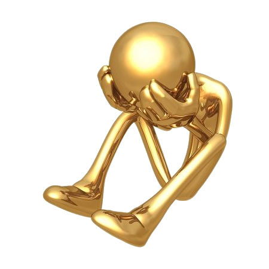

Social Media and Mental Health: Facts and Figures
Social media has become a ubiquitous part of our lives, with billions of users around the world.
You can see below some statistics of social media use by datareportal.com.
But how does social media affect our mental health? The answer is not simple, as social media can have both positive and negative impacts, depending on how we use it, who we interact with, and what we see and share online. Here are some of the main effects of social media on people’s mental health, based on the current research and statistics.
Positive effects of social media
- Social media can help us stay connected with our friends, family, and communities, especially during times of social distancing and isolation. Social media can also help us find and join groups of people who share our interests, hobbies, or values, and provide us with a sense of belonging and support.
- Social media can help us express ourselves and our identities, through posting photos, videos, stories, or opinions. Social media can also help us discover and learn new things, such as skills, hobbies, or cultures, and expand our horizons and perspectives.
- Social media can help us cope with stress, anxiety, or depression, by providing us with access to online resources, such as wellness apps, mental health programs, or peer support groups. Social media can also help us seek and receive professional help, such as online counseling or therapy, when we need it.

Negative effects of social media

- Social media can cause us to feel depressed or anxious, by exposing us to unrealistic expectations, negative comparisons, or harmful content. Social media can also make us feel lonely or isolated, by reducing our face-to-face interactions or creating a false sense of intimacy and connection.
- Social media can cause us to experience cyberbullying, harassment, or abuse, by enabling people to post or send hateful, hurtful, or threatening messages, comments, or images. Social media can also make us vulnerable to privacy breaches, identity theft, or online scams, by collecting and sharing our personal data or information.
- Social media can cause us to develop an addiction or unhealthy habits, by stimulating our reward system and making us crave more likes, comments, or followers. Social media can also disrupt our sleep patterns, attention span, or productivity, by keeping us awake, distracted, or procrastinating.
| Effect | Positive | Negative |
|---|---|---|
| Connection | Staying in touch with friends, family, and communities | Feeling lonely or isolated from real-life interactions |
| Expression | Showing and exploring our identities and interests | Feeling depressed or anxious from unrealistic expectations or comparisons |
| Coping | Accessing and receiving online resources and help | Experiencing cyberbullying, harassment, or abuse |
| Addiction | Learning and discovering new things | Developing unhealthy habits or behaviors |